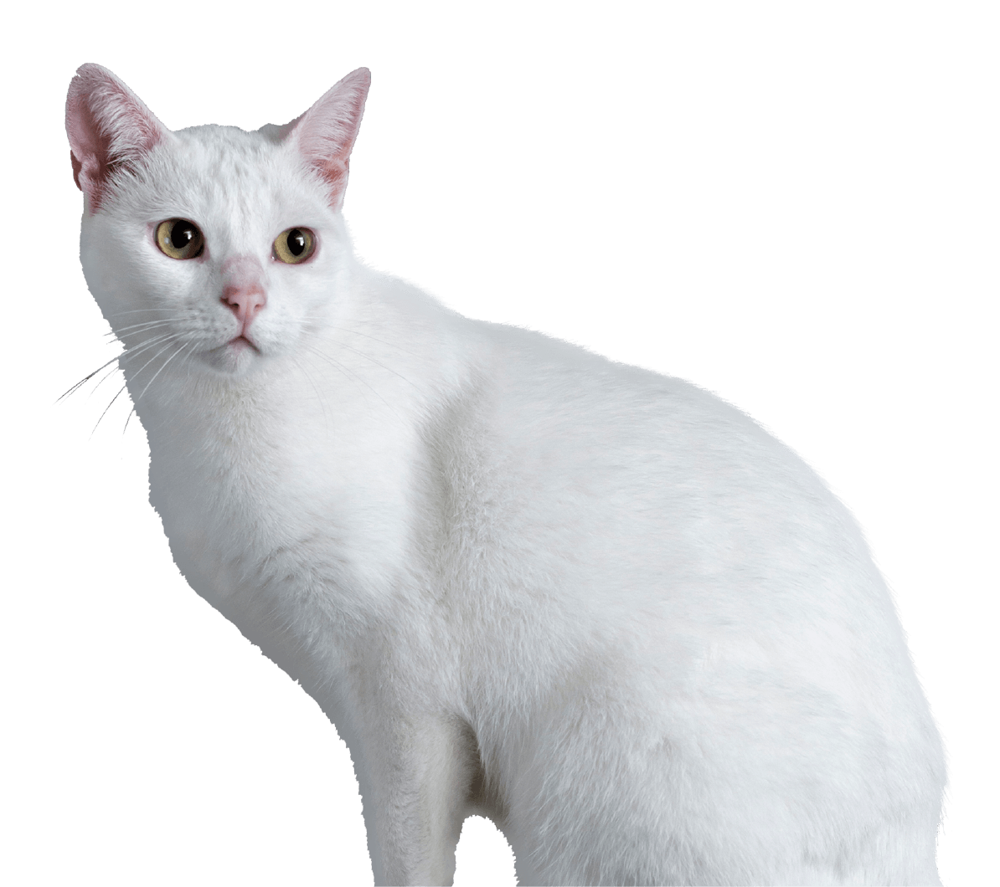

Adoptar una mascota es una gran decisión que puede cambiar tu vida y la de tu nueva mascota para siempre. En PetFriends, estamos comprometidos a ayudarte a encontrar la mascota adecuada para ti y estilo de vida. Aquí te presentamos los pasos que debes seguir para adoptar una mascota en nuestra organización.
¿Cómo Adoptar?
Pasos
-
1.
Encontrá una mascota que te guste -
2.
Completa la solicitud de adopción
-
3.
Programa la entrevista -
4.
Realiza una visita a la mascota
-
5.
Realiza la esperada adopción -
6.
Disfruta de tus nuevas mascotas
¡Felicitaciones! Ahora eres dueño de una mascota y estamos seguros de que te traerá mucha alegría y compañía. Si tienes alguna pregunta o necesitas asistencia después de la adopción, no dudes en ponerte en contacto con nosotros. ¡Gracias por adoptar a una mascota de PetFriends!